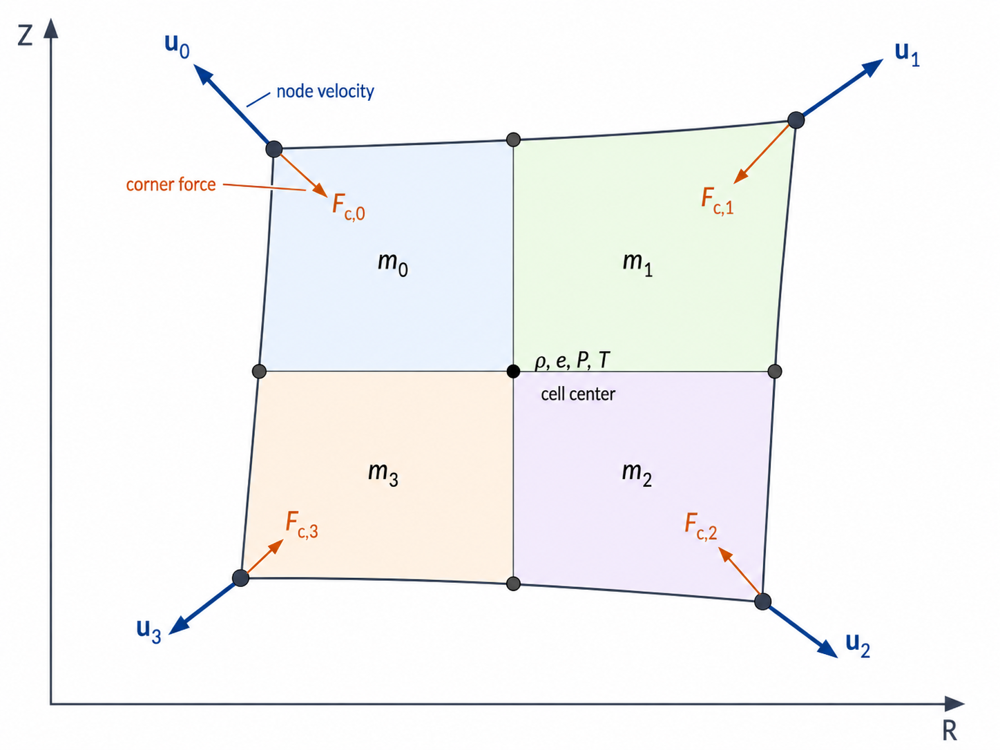
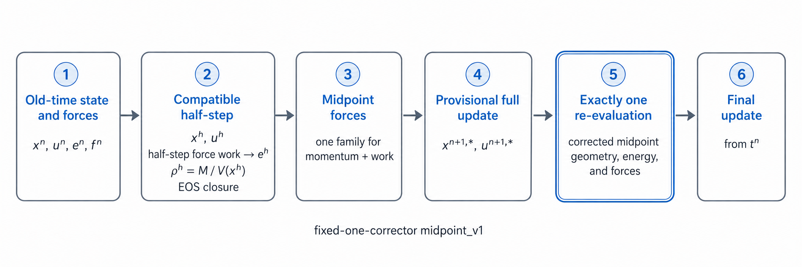

Lagrangian hydrodynamics reference
TENRYU advances material motion with a staggered Lagrangian scheme in 1D — spherical, cylindrical, or planar measures via Mesh.geometry_1d — and 2D axisymmetric RZ geometry. Thermodynamic state lives in cells, kinematics lives at nodes, and the 2D compatible path pairs corner forces with the same force work used by the internal-energy update.
Physical mechanism
A Lagrangian mesh moves with the material, so material interfaces and contact discontinuities remain on cell faces instead of diffusing through them. Converging shells retain their resolution—a 1000× volumetric compression compresses the cells with the material—and there is no advection term to discretize. The price is mesh distortion in 2D: shear and vorticity can tangle a moving mesh. That is the subject of the companion ALE page, not this one.
The placement of thermodynamic state in cells and kinematics at nodes is the classic von Neumann staggering. Compatible hydrodynamics in the sense of Caramana–Burton–Shashkov–Whalen builds the corner force on a node and the cell \(p\,dV\) work from the same geometric vectors, \(\mathbf S_{c,k}=\partial V_c/\partial\mathbf x_{c,k}\). What the kinetic energy gains through "force × node velocity" and what the internal energy loses through "pressure × volume rate" then become two readings of one and the same discrete quantity — the momentum and internal-energy equations are transposes (adjoints) of each other — so the kinetic-energy change and the internal-energy change cancel identically, and total energy is conserved to round-off by construction rather than by an a-posteriori fix. In RZ, the same construction uses the exact gradient of the revolved volume.
An inviscid staggered scheme has no mechanism to produce the entropy required across a shock. Artificial viscosity supplies a dissipative pressure confined to compression, so captured shocks satisfy the jump conditions over a few cells: its quadratic term handles strong shocks and its linear term handles the weak-shock tail. Scalar vNR ignores direction and therefore over-damps converging and shearing flows; the CSW98 edge/tensor family measures compression edge by edge on the median mesh — the auxiliary mesh whose edges connect cell centers to face midpoints — and its limiter switches dissipation off for self-similar compression, rigid rotation, and linear shear. Bilinear quadrilaterals also admit a zero-energy checkerboard, or hourglass, mode that is invisible to cell-average divergence. Subzonal pressures resist it with zero-net corner forces; they are a stabilizer, not a substitute for shock AV.
The production integrator is a midpoint scheme whose corrector runs exactly once. That fixed operation count makes runs bitwise reproducible, unlike correctors that iterate to a tolerance. Measured smooth-flow orders are \(p_\rho=2.0000\) and \(p_e=1.9999\), versus about 1.0007 for the legacy predictor–corrector, whose stale pressure closure during compression costs a full order. At driver level, hydro runs as the two half-steps around the field operators, with EOS reclosure before every consumer.
Discretization and state layout
In 1D spherical geometry, node j carries the shell-boundary radius \(r_j\) and radial velocity \(u_j\), while cell i carries density, ion/electron specific energies, temperatures, pressures, and artificial viscosity. A pure Lagrangian cell keeps its mass \(\Delta M_i\) fixed, moves its bounding nodes, and obtains density from \(\rho_i=\Delta M_i/V_i\), with \(V_i=4\pi(r_{j+1}^3-r_j^3)/3\). Thus the mesh follows the mass coordinates instead of advecting mass through fixed faces.
Pure Lagrangian motion is the normal 1D path. The old 1D mesh-relaxation path was removed because spherical cells do not tangle and relaxation smeared shocks. A separate, experimental 1D solution-adaptive ALE path (internal feature name “V3”) is opt-in and limited to 1D spherical cases with deterministic radiation; it is not a return of the retired legacy rezoner.
In 2D RZ, each axisymmetric zone is represented by a quadrilateral in the \((R,Z)\) meridian plane. Cell-centered \((\rho,e,P,T)\) is coupled to nodal position and velocity vectors. The authoritative corner vector is the exact gradient of the revolved cell volume, \(\mathbf S_{c,k}=\partial V_c/\partial\mathbf x_{c,k}\). It supplies the geometry for force assembly and the chain-rule volume rate \(\dot V_c=\sum_k\mathbf u_{n_k}\cdot\mathbf S_{c,k}\).

Corner masses and compatible forces
A cell mass is partitioned among its corners, and a node mass is the deterministic gather of all incident corner masses. The default kinematic_basis_rz_v1 convention is the exact R-weighted lump of the bilinear Q1 (four-node quadrilateral finite-element) kinematic basis, evaluated by 2×2 Gauss quadrature:
Here \(N_k(\xi,\eta)\) is the bilinear Q1 basis function of corner \(k\) on the reference square, \(J\) is its Jacobian, and \(R\) is the radius, so each corner receives the R-weighted integral of its basis share of the cell mass \(M_c\).
It is exact for any bilinear quadrilateral, reduces to the earlier radial-linear BBSW (Barlow–Burton–Shashkov–Wendroff) lump on aligned rectangles, and gives the exact \([1/6,1/6,1/3,1/3]\) split in an axis-column cell. Corner masses are initialized once and remain invariant during pure Lagrangian motion; an accepted remap is the point at which they may be reconstructed. The selectable bbsw_radial_v0 convention preserves legacy frozen configurations and degenerates to equal splitting on the axis. Multiblock meshes instead use their separate exact-subpolygon ownership contract, which this key does not control.
For the compatible scalar pressure/viscosity pair, the corner force and work use exactly the same geometric vectors:
$$ \mathbf F_{c\to n_k}=+(P_c+Q_c)\,\mathbf S_{c,k}, \qquad \dot V_c=\sum_k\mathbf u_{n_k}\cdot\mathbf S_{c,k}, $$ $$ \sum_n\mathbf u_n\cdot\mathbf F_n =\sum_c(P_c+Q_c)\dot V_c, \qquad \dot U_c=-\sum_k\mathbf F_{c,k}\cdot\mathbf u_{n_k}. $$- \(\mathbf S_{c,k}\) is the exact revolved-volume gradient: the single geometry object shared by force assembly, the volume rate, and the work audit.
- \(m_{c,k}\) under
kinematic_basis_rz_v1is the exact R-weighted lump of the bilinear Q1 basis. The R weighting accounts for the growth of an axisymmetric corner's mass with radius; the split is exactly \([1/6,1/6,1/3,1/3]\) in an axis-column cell. It remains invariant during Lagrangian motion and is reconstructed only after an accepted remap. - The sign convention \(\mathbf F=+(P_c+Q_c)\mathbf S_{c,k}\) is outward because \(\mathbf S\) points toward increasing volume; compression therefore does positive internal-energy work.
- The adjoint identity \(\sum_n\mathbf u_n\cdot\mathbf F_n=\sum_c(P_c+Q_c)\dot V_c\) is the discrete total-energy statement.
- Scalar vNR uses \(\Delta l_c=\sqrt{A_c}\), with \(A_c\) the cell's meridian-plane area, and the \(C_2^2\) convention for its quadratic term.
- The Kuropatenko wave speed [5] in CSW98 is one expression that approaches the acoustic speed for weak compression and the strong-shock speed for large compression.
The force sign is outward because \(\mathbf S\) points toward increasing volume. Compression therefore produces positive internal-energy work. In the CSW compatible path, pressure, subzonal-pressure, and unique-edge AV forces occupy separate buffers, but each energy contribution is still computed from the same stored force family and the same time-centered velocity. This discrete adjoint pairing is the basis of the total-energy identity.
Time integration
At driver level, hydro is the half-step operator in the default laser full → hydro half → conduction full → radiation full → hydro half sequence. Each hydro half-step runs a complete cycle of the selected integrator over that half interval, with EOS reclosure before the next operator consumes the state.
pc_v0 is retained for legacy frozen configurations. It predicts half-step position and velocity from old-time forces, evaluates half-step geometry and forces, then corrects the full step. Because its predictor does not advance internal energy, the pressure closure is stale during compression; the retained scheme measures approximately first order in smooth temporal convergence.
The default midpoint_v1 performs compatible half-step work, evaluates the exact half-geometry density \(\rho^h=M_c/V(x^h)\), and closes the EOS at \((\rho^h,e^h)\). One midpoint corner-force family is shared by momentum, work, and audit. A provisional full update is followed by exactly one deterministic force re-evaluation at the corrected midpoint; the final state is advanced again from \(t^n\), with \(\bar{\mathbf u}=(\mathbf u^n+\mathbf u^{n+1})/2\). The measured smooth-flow orders (from the 2d_rz_v3_smooth_temporal gate) are \(p_\rho=2.0000\) and \(p_e=1.9999\), versus about 1.0007 for pc_v0. Multiblock/CSR (compressed-sparse-row connectivity), HLLC (Harten–Lax–van Leer-contact Riemann solver), and button-center integrations — the assembled polar-center “button” meshes of the 2D mesh families — currently remain on pc_v0 regardless of the knob. Under MPI with two or more ranks the driver rejects midpoint_v1 outright, so multi-rank 2D decks must select pc_v0 explicitly (see the MPI page).

midpoint_v1 uses one fixed correction: compatible half-step work, midpoint forces, a provisional full update, and one deterministic re-evaluation before the final update.One hydro half-step (midpoint_v1), step by step
- Enter with the post-EOS state at \(t^n\); assemble the old-time corner forces from \(P+Q\) and the cached \(\mathbf S\).
- Take the compatible half-step: advance \(x^h\) and \(u^h\), accumulate the half-step force work into \(e^h\), form the exact half-geometry density \(\rho^h=M_c/V(x^h)\), and close the EOS at \((\rho^h,e^h)\).
- Assemble one midpoint corner-force family—pressure, subzonal pressure when enabled, and unique-edge AV in separate buffers—and use it alike for momentum, work, and audit.
- Form the provisional full update \(x^{n+1,*},u^{n+1,*}\).
- Re-evaluate exactly once: recompute geometry, energy, and forces at the corrected midpoint. This is the fixed-one-corrector contract.
- Advance the final state again from \(t^n\), using \(\bar{\mathbf u}=(\mathbf u^n+\mathbf u^{n+1})/2\); apply the boundary condition and reclose the EOS.
The driver chooses the candidate interval before this cycle. Its hydro CFL includes \(\Delta l_c/(|\mathbf u_c|+c_{s,c})\); in 2D, the mesh-quality/minimum-altitude and predictive corner-J guards can further limit the timestep or reject a candidate state before position commit.
Pressure \(p\,dV\), subzonal-pressure work, and AV work enter the per-cell work buffers from the same force families used by momentum. Those contributions feed the internal-energy update and energy audit exactly once; boundary work keeps its existing ledger ownership, and stage-local trial states do not write persistent ledgers.
Artificial viscosity
The legacy scalar von Neumann–Richtmyer viscosity is active only in compression. TENRYU uses \(C_2^2\), rather than \(C_2\), as the quadratic coefficient:
$$ Q_c= \begin{cases} \rho_c\left[C_2^2(\Delta l_c)^2(\nabla\!\cdot\!\mathbf u_c)^2 +C_1\Delta l_c\,c_{s,c}\lvert\nabla\!\cdot\!\mathbf u_c\rvert\right], & \nabla\!\cdot\!\mathbf u_c<0,\\ 0, & \text{otherwise}, \end{cases} \qquad \Delta l_c=\sqrt{A_c}. $$Here \(c_{s,c}\) is the cell sound speed, \(\nabla\!\cdot\mathbf u_c\) is the cell-average velocity divergence, and \(C_1\), \(C_2\) are the linear and quadratic coefficients whose defaults follow.
The general defaults are av_C1=0.1 and av_C2=1.5. In 1D, av_type selects vnr, the optional Riemann form, or the 1D CSW form. In 2D, the separate av_model key selects legacy scalar_vnr_legacy or a compatible edge-force model.
csw_edge_csw98 is the corrected production 2D compatible option: a corner-symmetrized, median-mesh CSW-1998 tensor-family construction with a strict compressive-side switch, the Kuropatenko wave speed [5], and signed compatible work. Its continuation-edge limiter compares velocity gradients along the same logical line; self-similar compression, rigid rotation, and linear grid shear give limiter ratio one and suppress artificial dissipation. If the CSW 2D model is selected and the coefficients are omitted, the published \(C_1=C_2=1\) defaults are used. The earlier csw_edge mode is retained bit-identically for certification continuity; the placeholder namelist value csw_edge_plus_tensor_limited is not implemented and is rejected by input validation.
Subzonal pressures and hourglass control
Bilinear Lagrangian quadrilaterals can develop a zero-energy checkerboard, or hourglass, mode. Both control surfaces are opt-in and default off. Canonical Caramana–Shashkov subzonal pressure keeps the corner masses fixed during the Lagrangian step, computes each subzone density from its current subvolume, evaluates an EOS pressure perturbation, and forms zero-net cell corner forces. It reacts to subzone volume change rather than filtering velocity, and its work is paired with those same forces.
The separate legacy hourglass.enabled path uses a linearized subzonal-pressure restoring force with force limiting and compatible work. It suppresses the bilinear checkerboard component while leaving translation and affine strain/shear untouched. Neither mechanism is a substitute for shock-capturing AV. Canonical subzonal pressure requires a compatible CSW edge model; csw_edge_csw98 may itself run with subzonal pressure either on or off.
RZ momentum schemes
volume_weighted is the default and uses the cached exact-RZ volume-gradient corner vectors and true RZ nodal masses. The optional area_weighted_symmetric v1 operator instead uses planar outward corner vectors and a planar subzonal nodal mass. It is available for structured single-block meshes and all-quadrilateral multiblock CSR meshes only, with scalar VNR and subzonal pressure disabled; tri-fan caps (the triangular polar-center fans of polar meshes) are rejected.
The area-weighted option keeps the existing true-RZ geometric \(P\,dV\) internal-energy update. It is therefore not exactly total-energy compatible and remains in the legacy non-compatible conservation class. Diagnostics, timestep estimates, and remap continue to use the true RZ node mass.
Namelist controls
The following are selected keys under Numerics.hydro. See the namelist reference for the complete surface and validation rules.
| Key | Default | Purpose |
|---|---|---|
av_type | "vnr" | 1D shock-support selector: vnr, riemann, or csw. |
av_model | "scalar_vnr_legacy" | 2D RZ selector; csw_edge_csw98 chooses the corrected compatible CSW98 edge AV. |
av_C1 | 0.1 | Linear AV coefficient; omitted 2D CSW modes use 1.0. |
av_C2 | 1.5 | Quadratic AV coefficient; scalar vNR uses \(C_2^2\), while omitted 2D CSW modes use 1.0. |
corner_mass_convention | "kinematic_basis_rz_v1" | 2D single-block corner-mass partition; legacy alternative is bbsw_radial_v0. |
time_integration | "midpoint_v1" | 2D RZ integrator; pc_v0 retains the legacy path. |
rz_momentum_scheme | "volume_weighted" | Exact-RZ default or constrained area_weighted_symmetric v1. |
subzonal_pressure_enabled | False | Enables canonical compatible subzonal-pressure forces. |
hourglass.enabled | False | Enables the legacy linearized anti-hourglass path in 2D RZ. |
boundary_1d | "free" | Outer 1D boundary: free, fixed, reflect, or pressure. |
Verification
- Noh and Sod-class analytic gates cover strong-shock position and density plateaus, the exact planar Riemann three-wave structure, mass/impulse balances, and 1D energy conservation; 2D RZ H1/H2 decks exercise planar Sod and cylindrical Noh layouts.
verify_gxii_1d_fld_regressionis the active GXII golden regression, gating absorbed energy and history-based bang, peak-density, areal-density, and central-temperature metrics.- Compatible-force tests lock \(\sum \mathbf u\cdot\mathbf F=\sum (P_c+Q_c)\dot V_c\), closed-hydro kinetic–internal exchange, deterministic gathers, and multiblock seam conservation; production-compatible smoke gates additionally bound the recorded energy residual.
2d_rz_v3_smooth_temporalmeasures themidpoint_v1density and energy orders quoted above and distinguishes them from retainedpc_v0.
References
- J. von Neumann and R. D. Richtmyer, "A Method for the Numerical Calculation of Hydrodynamic Shocks," J. Appl. Phys. 21, 232–237 (1950). doi:10.1063/1.1699639
- E. J. Caramana, D. E. Burton, M. J. Shashkov, and P. P. Whalen, "The Construction of Compatible Hydrodynamics Algorithms Utilizing Conservation of Total Energy," J. Comput. Phys. 146, 227–262 (1998). doi:10.1006/jcph.1998.6029
- E. J. Caramana, M. J. Shashkov, and P. P. Whalen, "Formulations of Artificial Viscosity for Multi-dimensional Shock Wave Computations," J. Comput. Phys. 144, 70–97 (1998).
- E. J. Caramana and M. J. Shashkov, "Elimination of Artificial Grid Distortion and Hourglass-Type Motions by Means of Lagrangian Subzonal Masses and Pressures," J. Comput. Phys. 142, 521–561 (1998). doi:10.1006/jcph.1998.5952
- V. F. Kuropatenko, "On Difference Methods for the Equations of Hydrodynamics," in Difference Methods for Solutions of Problems of Mathematical Physics, I, edited by N. N. Janenko (American Mathematical Society, Providence, 1967), p. 116.